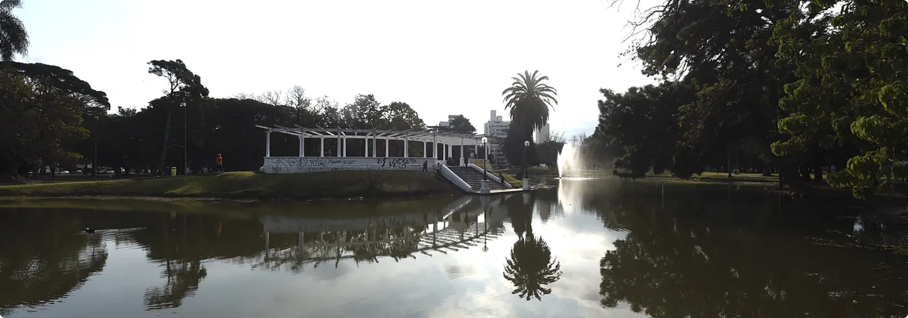
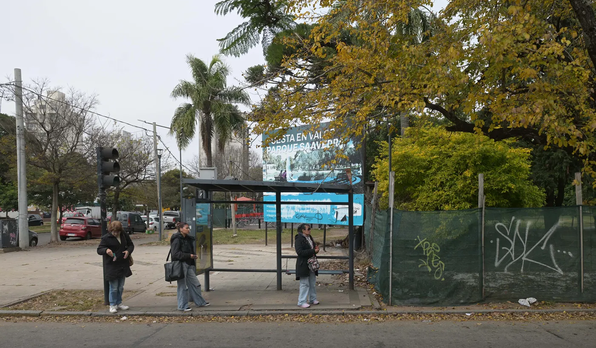
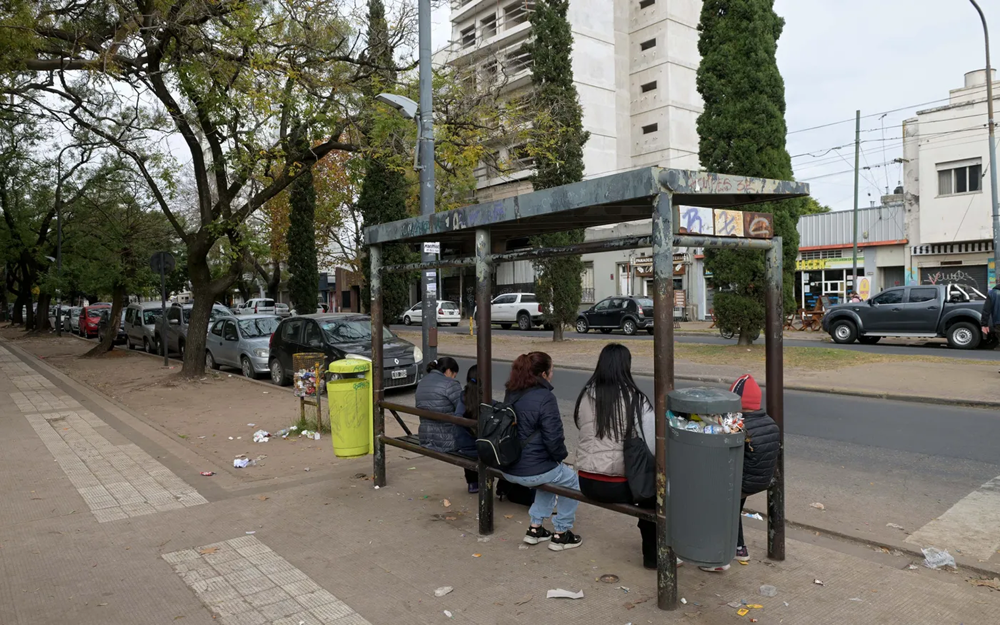
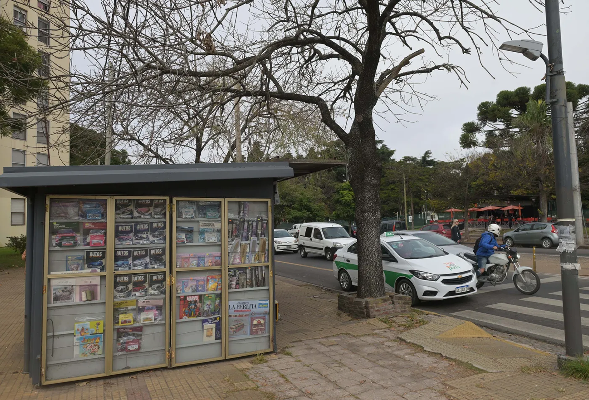

Parque Saavedra: ¿cuáles fueron los planteos de los vecinos sobre las obras y qué respondió la Municipalidad?
Tras el cierre de la consulta pública por las obras en Parque Saavedra, la Municipalidad de La Plata oficializó las respuestas a 225 planteos vecinales.
La Municipalidad de La Plata dio por concluida la instancia de participación ciudadana abierta para analizar el proyecto de puesta en valor y ampliación del Parque Saavedra y avanzará con el proceso de licitación tras publicar en el Boletín Oficial un informe con las conclusiones del aporte de los vecinos y las respuestas que se habían prometido.
Durante el proceso, realizado entre el 26 de mayo y el 2 de junio, se recibieron 225 presentaciones de vecinos e instituciones con observaciones, consultas, aportes y objeciones sobre la iniciativa.

proceso de inicio de obras, a la
espera de la licitación
AGLP
Según el informe oficial incorporado al expediente, las inquietudes se concentraron en siete ejes principales: movilidad, transporte público y tránsito; accesos al Hospital de Niños; patrimonio e identidad urbana; ambiente; seguridad e iluminación; mantenimiento urbano y equipamiento del parque.
De acuerdo a ese reporte, publicado como anexo que se sumará al expediente global sobre las remodelaciones encaradas por la Comuna en el paseo que ocupa desde 12 a 14 y desde 64 a 68, hubo 16 presentaciones de carácter institucional y 209 individuales. "Refleja una participación predominantemente ciudadana en términos de origen", se interpretó.
A continuación, uno por uno, los principales planteos vecinales y las respuestas brindadas por el Municipio.
Micros, tránsito y estacionamiento
El planteo más recurrente de los vecinos que se sumaron a la consulta abierta por la Municipalidad estuvo vinculada a los cambios en la circulación vehicular alrededor del parque, ya que tres de las cuatro calles que lo rodean pasarán a tener una sola mano.
Los vecinos consultaron sobre la modificación de los sentidos de circulación, el funcionamiento del transporte público, la disponibilidad de estacionamiento, la conservación de las ramblas perimetrales, la seguridad vial y la movilidad peatonal y ciclista.
utiliza las calles que rodean el
Parque Saavedra
Entre las respuestas de la Comuna se destaca la confirmación de que no habrá eliminación de recorridos y se avanza con precisiones respecto a cómo se organizarán las paradas de micro a partir de los cambios al tránsito.
Así el informe publicado en las últimas horas por la Comuna establece que las paradas se ubicarán sobre el margen derecho del sentido de circulación único que tendrán las calles 12 y 14, "procurando compatibilizar líneas y ramales con destinos comunes en puntos de detención compartidos".
Y con precisión se aporta la ubicación que tendrán las paradas:
12 entre 66 y 67
12 entre 54 y 64
14 entre 65 y 66
14 entre 67 y 68

desaparecerá, porque estarán en la
margen derecha
Se fundamenta que la parada de 14 entre 65 y 66 se mantiene para que pacientes, acompañante y personal del Hospital de Niños accedan al establecimiento sin necesidad de atravesar calzadas y conservando la proximidad a los accesos peatonales.
También se conservan las paradas de taxi de 66 entre 14 y 15 y se plantea el traslado de la que está en 12 a calle 64 entre 11 y 12.

a la calle 64
Respecto de calle 12 se proponen dos carriles de circulación en un único sentido y uno de estacionamiento, al igual que en las calles 64 y 14. Sin embargo, en esta última lo limita al tramo entre 64 y 68, ya que tendrá estacionamiento a 45º entre 64 y 66.
Por eso la propuesta incluye la ampliación de las dársenas sobre calle 14 con esa alternativa "optimizando el aprovechamiento del espacio disponible y mejorando las condiciones operativas para usuarios, visitantes y personal del establecimiento sanitario".